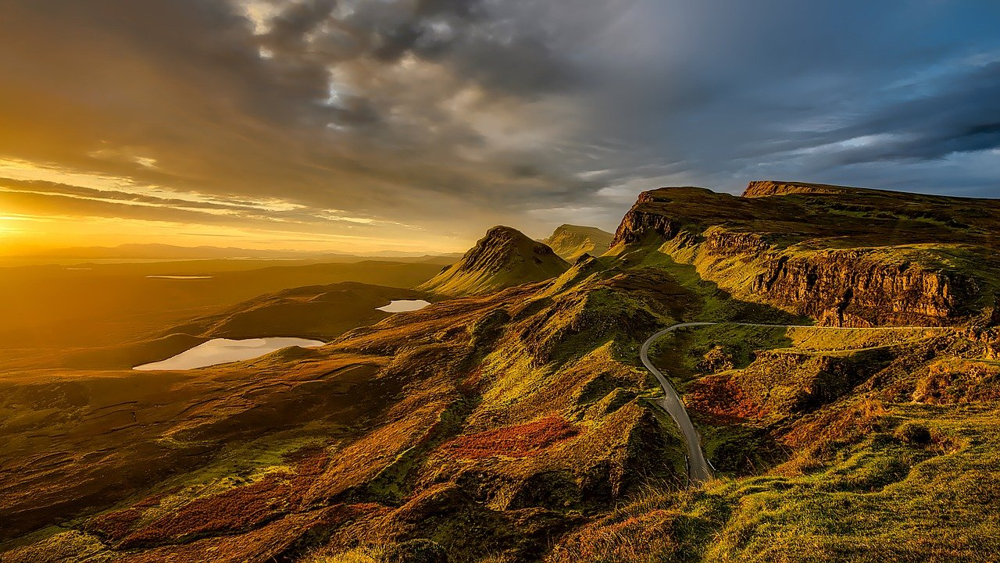

Freizeitnutzung
Berge stehen für Beständigkeit und Unveränderlichkeit und finden in diesem Sinne in vielen Sprichwörtern Erwähnung: „Wenn der Berg nicht zum Propheten kommt, muss der Prophet zum Berge gehen“. Viele Menschen fühlen sich am Berg „dem Himmel näher“, und dieses Erlebnis ist Anregung zu Nachdenken oder Gebet. Als „Leiter zu Gott“ tragen daher viele niedrige bis mittelhohe Berge eine Kapelle oder Gedenkstätte. In den Hochgebirgen Europas und Amerikas tragen sie meist ein Gipfelkreuz.
Viele Berge sind wegen ihrer Rundsicht bekannt oder beliebt. Wenn diese durch Wald behindert ist, errichtet man eine Aussichtswarte. Häufig sind Vermessungspunkte oder besser trigonometrische Punkte nahe beim Gipfel unerlässlich.

×